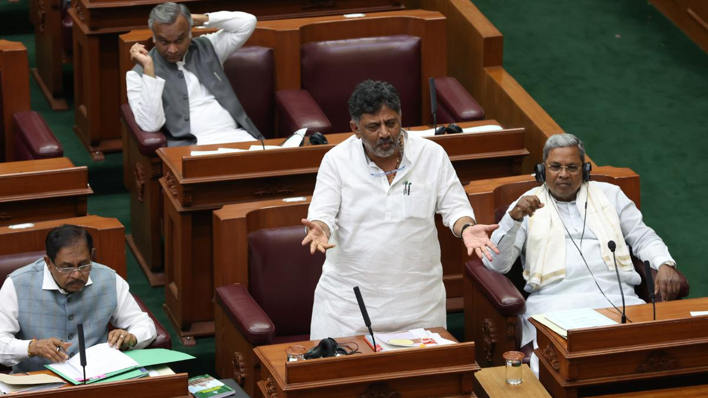
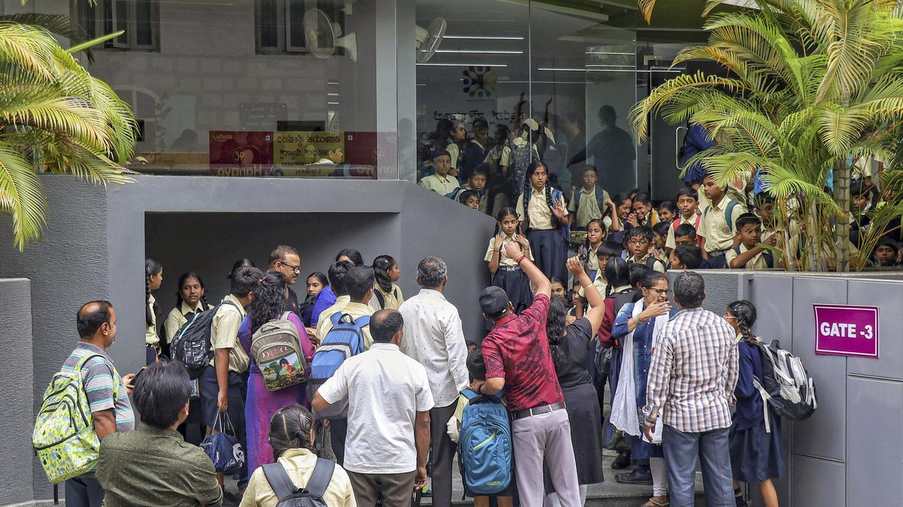
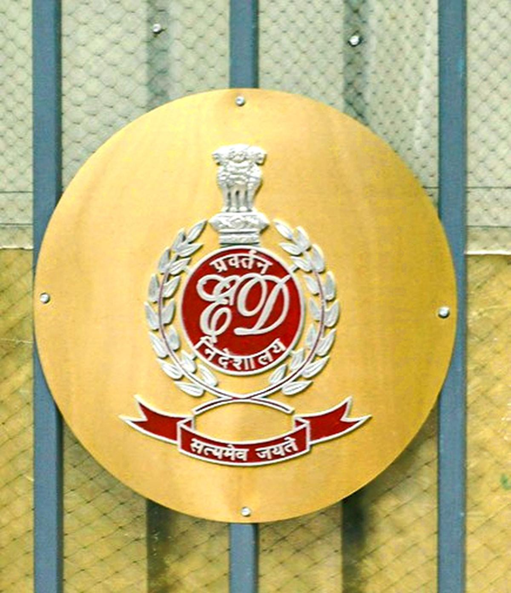
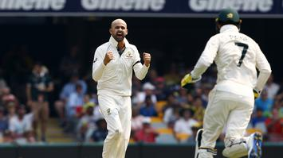

Important News
Nikhil Gupta devout Hindu, forced to eat beef: What family told Supreme Court

Nikhil Gupta is a 52-year-old Indian charged by the US for plotting to kill Gurpatwant Singh Pannun. Gupta was arrested by the Czech authorities on June 30.
more infoState News
Karnataka Assembly witnesses heated exchange of words over withdrawal of consent to CBI to probe against D.K. Shivakumar
Speaker denies permission to debate the issue through an adjournment motion on the grounds that matter is before court and that it is an issue petaining to just an individual
more infoNew cyber threats catch India’s IT capital, Bengaluru, unawares
In the context of the recent hoax bomb threat email that around 70 schools in and around Bengaluru received and the chaos it unleashed in the IT city, a look at the emerging nature of cyber threats and assess the infrastructural readiness to face new challenges
more infoNational News
ED conducts searches in Delhi-NCR, Punjab against Chandigarh-based pharma company
The first round of searches in this case against the company -- Parabolic Drugs-- were carried out in October
more infoNarayana Murthy warns about deepfake video of him endorsing trading apps
In a post on X (formerly Twitter), he said some web pages claimed that he invested in automated trading applications. Through multiple tweets, the Infosys founder denied any involvement in such activity
more infoWorld News
Global coal use at all-time high in 2023: IEA
Global demand for coal is seen rising 1.4% in 2023, surpassing 8.5 billion metric tons for the first time as usage in India is expected to grow 8%
more infoIsrael bombs Gaza as rift with U.S. grows
U.S. President Joe Biden, whose government has provided Israel with billions of dollars in military aid, delivered his sharpest rebuke of the war on Wednesday
more infoSports News
AUS vs PAK first Test | Pakistan digs in as Lyon edges closer to 500 Test wickets
But it was a slow grind with Pakistan runs coming off 53 overs after Aamer Jamal took 6-111 on debut to help dismiss the hosts for 487.
more infoCameron Green reveals he is suffering from irreversible chronic kidney disease
The all-rounder, who is a vital part of the Australia cricket team, said that the disease has no symptoms and is irreversible
more info